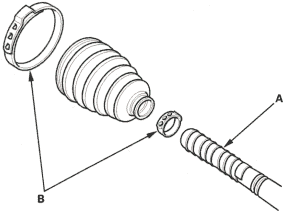
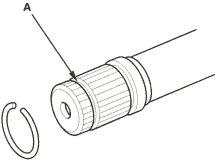
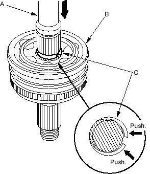
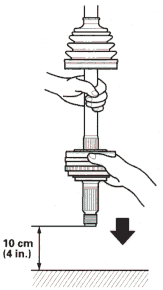

Outboard Joint Side:
- Wrap the splines with vinyl tape (A) to prevent damage to the outboard boot.

- Install the new ear clamp bands (B) and outboard boot onto the driveshaft, then remove the vinyl tape. Take care not to damage the outboard boot.
- Install the new stop ring into the driveshaft groove (A).

- Insert the driveshaft (A) into the outboard joint (B) until the stop ring (C) is close to the joint.

- To completely seat the outboard joint, pick up the driveshaft and joint and drop them from about 10 cm (4 in.) onto a hard surface. Do not use a hammer as excessive force may damage the driveshaft.
